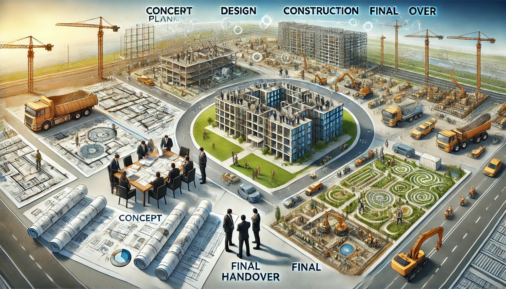

The Key Stages of Integrated Project Development
The Key Stages of Integrated Project Development: From Concept to Completion
Content: "Integrated project development involves managing every phase of a project from initial concept through to final completion, ensuring all elements are coordinated and aligned. Here are the key stages:
- Conceptualization and Planning:The integrated development process begins with a clear conceptualization of the project’s goals and scope. This includes defining the project’s objectives, identifying stakeholders, and creating a high-level plan that outlines the key milestones and deliverables.
- Design and Engineering: Once the concept is solidified, detailed design and engineering work begins. This stage involves creating detailed architectural plans, engineering drawings, and technical specifications. All elements, including structural, mechanical, electrical, and civil engineering aspects, are integrated into a cohesive design.
- Project Financing and Procurement:Securing financing is a crucial step in integrated development. This stage involves obtaining funding, preparing a detailed budget, and planning for procurement of materials, labor, and services. Effective financial planning and procurement strategies are essential to keep the project on track.
- Construction and Project Management:With design and financing in place, the construction phase begins. Integrated project development requires close coordination between various teams to ensure that construction progresses smoothly. Project management oversees all aspects, ensuring that timelines, budgets, and quality standards are met.
- Testing, Commissioning, and Handover:After construction, the project enters the testing and commissioning phase. This involves testing all systems to ensure they operate correctly and meet performance standards. Any issues are addressed before the final handover to the client or end-user.
- Post-Project Evaluation and Support:The final stage of integrated project development includes a post-project evaluation to assess the success of the project against its initial objectives. Any lessons learned are documented for future projects. Ongoing support and maintenance may also be provided to ensure the long-term success of the development.